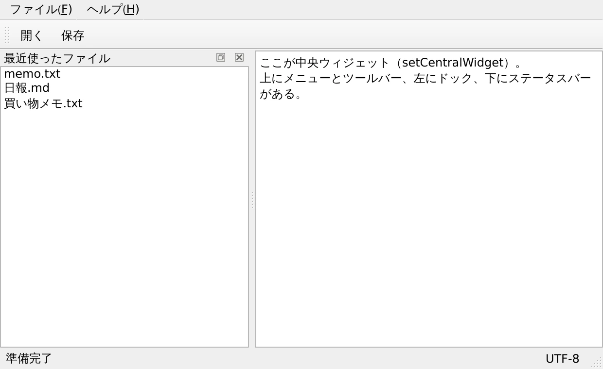
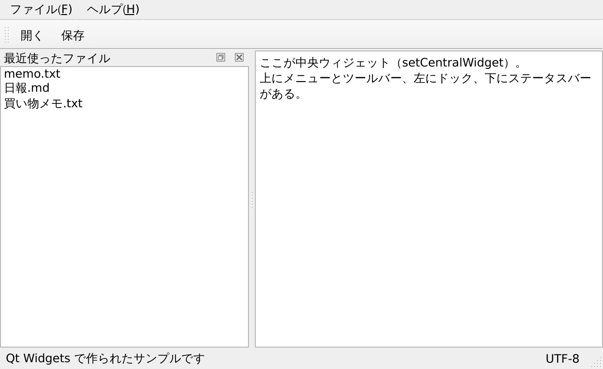

第 6 章·読了目安 12 分
第6章 ウィンドウの骨格 — QMainWindow
メニューバー、ツールバー、ステータスバー、ドック。「アプリらしいアプリ」の枠組みは QMainWindow が用意してくれています。
ここまでは QWidget をそのままウィンドウとして使ってきました。
それで困らない小さな道具もありますが、
メニューやツールバーが要るアプリでは QMainWindow を使います。
QMainWindow は「置き場所」が決まっている
QWidget との違いは単純で、
メニューバー・ツールバー・ステータスバー・ドックの置き場所が最初から用意されていることです。
自分でレイアウトを組む必要はありません。
QMainWindow は自分でレイアウトを管理しているので、
QVBoxLayout(main_window) のように直接レイアウトを付けると警告が出て、うまく動きません。
中身は必ず setCentralWidget() で 1 つのウィジェットとして渡します。
複数並べたいときは、まず QWidget を作ってそこにレイアウトを組み、
それを中央ウィジェットにします。
central = QWidget()layout = QVBoxLayout(central)layout.addWidget(...)self.setCentralWidget(central) # ○ この形にするQAction — 「動作」をひとつの物として扱う
「ファイルを開く」という動作は、メニューにもツールバーにも、
右クリックメニューにも置きたいことがあります。
毎回コピーするのではなく、動作そのものをひとつのオブジェクトにするのが Qt のやり方です。
それが QAction です。
open_action = QAction("開く", self)open_action.setShortcut(QKeySequence.StandardKey.Open) # Ctrl+O / ⌘Oopen_action.setStatusTip("ファイルを開きます")open_action.triggered.connect(self.on_open)file_menu.addAction(open_action) # メニューにもtoolbar.addAction(open_action) # ツールバーにも、同じものを置ける
こうしておけば、open_action.setEnabled(False) の 1 行で
メニュー項目もツールバーのボタンも同時に灰色になります。
from PySide6.QtWidgets import QActionfrom PySide6.QtGui import QAction
ImportError: cannot import name 'QAction' from 'PySide6.QtWidgets'
というエラーが出たら、これが原因です。
QShortcut も同じく QtGui に移動しています。
全部入りの例
"""QMainWindow — メニュー・ツールバー・ステータスバーを備えた本格的な窓。QWidget との違いは「あらかじめ場所が用意されている」こと。中央には setCentralWidget() で好きなウィジェットを置く。実行: python ch06_mainwindow.py"""import sysfrom PySide6.QtCore import Qtfrom PySide6.QtGui import QAction, QKeySequence # ★ Qt6 では QAction は QtGui にあるfrom PySide6.QtWidgets import (QApplication, QDockWidget, QLabel, QListWidget, QMainWindow, QPlainTextEdit, QToolBar)class Editor(QMainWindow): def __init__(self): super().__init__() self.setWindowTitle("メモ帳もどき — QMainWindow の全体像") self.resize(620, 380) # --- 中央: 主役になるウィジェットをひとつ置く --------------------- self.text = QPlainTextEdit() self.text.setPlainText( "ここが中央ウィジェット（setCentralWidget）。\n" "上にメニューとツールバー、左にドック、下にステータスバーがある。" ) self.setCentralWidget(self.text) # --- 動作の定義: QAction にまとめる ------------------------------- # 同じ「開く」をメニューにもツールバーにも置けるのが QAction の利点。 open_action = QAction("開く", self) open_action.setShortcut(QKeySequence.StandardKey.Open) # Ctrl+O / ⌘O open_action.setStatusTip("ファイルを開きます") open_action.triggered.connect(lambda: self.statusBar().showMessage("「開く」が実行されました", 3000)) save_action = QAction("保存", self) save_action.setShortcut(QKeySequence.StandardKey.Save) save_action.triggered.connect(lambda: self.statusBar().showMessage("保存しました", 3000)) quit_action = QAction("終了", self) quit_action.setShortcut(QKeySequence.StandardKey.Quit) quit_action.triggered.connect(self.close) about_action = QAction("このアプリについて", self) about_action.setObjectName("aboutAction") # 教材の自動撮影で使う名前 about_action.triggered.connect( lambda: self.statusBar().showMessage("Qt Widgets で作られたサンプルです", 5000)) # --- メニューバー ------------------------------------------------- file_menu = self.menuBar().addMenu("ファイル(&F)") file_menu.addAction(open_action) file_menu.addAction(save_action) file_menu.addSeparator() file_menu.addAction(quit_action) help_menu = self.menuBar().addMenu("ヘルプ(&H)") help_menu.addAction(about_action) # --- ツールバー --------------------------------------------------- toolbar = QToolBar("主なツール") toolbar.setToolButtonStyle(Qt.ToolButtonStyle.ToolButtonTextBesideIcon) toolbar.addAction(open_action) toolbar.addAction(save_action) self.addToolBar(toolbar) # --- ドック（切り離せる脇のパネル） ------------------------------- dock = QDockWidget("最近使ったファイル", self) recent = QListWidget() recent.addItems(["memo.txt", "日報.md", "買い物メモ.txt"]) dock.setWidget(recent) self.addDockWidget(Qt.DockWidgetArea.LeftDockWidgetArea, dock) # --- ステータスバー ----------------------------------------------- self.statusBar().showMessage("準備完了") self.statusBar().addPermanentWidget(QLabel("UTF-8")) # 右端に常駐する表示app = QApplication(sys.argv)window = Editor()window.show()sys.exit(app.exec())
メニューバー
file_menu = self.menuBar().addMenu("ファイル(&F)")file_menu.addAction(open_action)file_menu.addSeparator() # 区切り線file_menu.addAction(quit_action)
メニュー名の (&F) は、Alt + F で開けるようにする指定です。
& の直後の文字に下線が引かれます。
ツールバー
toolbar = self.addToolBar("主なツール")toolbar.setToolButtonStyle(Qt.ToolButtonStyle.ToolButtonTextBesideIcon)toolbar.addAction(open_action)アイコンだけ、文字だけ、両方、といった表示の切り替えは次のとおりです。
| 指定 | 見た目 |
|---|---|
ToolButtonIconOnly | アイコンのみ（既定） |
ToolButtonTextOnly | 文字のみ |
ToolButtonTextBesideIcon | アイコンの右に文字 |
ToolButtonTextUnderIcon | アイコンの下に文字 |
ステータスバー
self.statusBar().showMessage("準備完了") # 一時的な表示self.statusBar().showMessage("保存しました", 3000) # 3 秒で消えるself.statusBar().addPermanentWidget(QLabel("UTF-8")) # 右端に常駐
QAction に setStatusTip() を設定しておくと、
そのメニュー項目にマウスを乗せただけで説明がステータスバーに出ます。
自分でシグナルをつなぐ必要はありません。
ドック
dock = QDockWidget("最近使ったファイル", self)dock.setWidget(中身のウィジェット)self.addDockWidget(Qt.DockWidgetArea.LeftDockWidgetArea, dock)ドックはユーザーが切り離してフローティングにしたり、 左右上下に付け替えたりできます。エディタのサイドパネルのようなものです。
ウィンドウの状態を覚えておく
「前回終了したときの位置とサイズで開いてほしい」というのは、よくある要望です。
QSettings を使うと、OS ごとの適切な場所（Windows ならレジストリ、
macOS なら plist）に自動で保存してくれます。
from PySide6.QtCore import QSettingsclass MyWindow(QMainWindow): def __init__(self): super().__init__() # ... 画面の組み立て ... settings = QSettings("MyCompany", "MyApp") geometry = settings.value("geometry") if geometry: self.restoreGeometry(geometry) state = settings.value("windowState") if state: self.restoreState(state) # ツールバーやドックの配置も戻る def closeEvent(self, event): settings = QSettings("MyCompany", "MyApp") settings.setValue("geometry", self.saveGeometry()) settings.setValue("windowState", self.saveState()) super().closeEvent(event)ch06_mainwindow.pyに「編集」メニューを足し、［元に戻す］［やり直す］を入れる。ショートカットはQKeySequence.StandardKey.Undo/Redo。- ドックを右側（
RightDockWidgetArea）に移してみる。 - 上の
QSettingsのコードを組み込んで、ウィンドウを動かして閉じ、もう一度開いてみる。
この章のまとめ
QMainWindowはメニュー・ツールバー・ステータスバー・ドックの置き場所を用意してくれる。- 中身は
setCentralWidget()でひとつだけ渡す。直接レイアウトを付けてはいけない。 - 動作は
QActionにまとめ、メニューとツールバーで使い回す。 - Qt6 では
QActionはQtGuiにある（Qt5 はQtWidgets）。 - ウィンドウの位置・サイズの記憶は
QSettings＋saveGeometry()。